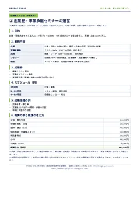
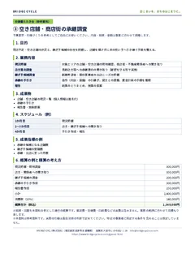
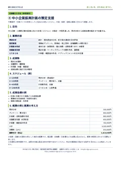
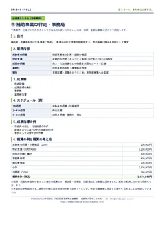

自治体・商工団体・支援機関の皆さまへ
調査で終わらせない。
次の施策まで考える。
「地域の企業は何に困っているか」「今の支援策は効果があるか」。商工会の現場で20年以上事業者に接してきた代表が、調査設計から成果指標・実行計画まで、自治体の次の判断に使える形に整理します。
相談件数×単価で算定
補助率が変わる成果連動型
- 約20年商工会の経営指導員（瀬田商工会・大津北商工会）
- 500社超創業・承継・廃業まで、小規模事業者を支援
- 認定経営革新等支援機関中小企業庁の認定（認定番号 109825000112）
WHAT YOU RECEIVE
「報告書を納品して終わり」にしない、3つの成果物。
業務ごとの仕様・契約範囲に応じて、調査結果を次年度の施策に使えるよう整理します。
事業者アンケート・聞き取りの結果を、業種・規模・テーマ別に整理。どの層に課題があるかを明確にします。
行政・支援機関が対応できる施策案、実施の役割分担、優先順位を整理します。
実施件数に加え、売上・労働生産性・創業など、目的に応じた評価指標を提案します。
施策をつくる側と、使う側の両方にいました。
商工会の職員として、市の振興ビジョンの策定・推進と、商工団体への補助制度の見直しに関わってきました。

元 商工会経営指導員（瀬田商工会・大津北商工会）
- 令和4年
大津市中小企業・小規模企業振興ビジョンの策定
策定にあたって意見・助言を行う「大津市中小企業振興に関する円卓会議」の委員を務めました。
掲載：大津市中小企業・小規模企業振興ビジョン 33ページ（当時の所属・役職：瀬田商工会 主幹）
- 〜令和6年
振興推進会議の委員として、施策の推進に参画
策定後は「大津市中小企業・小規模企業等振興推進会議」の委員として、ビジョンに沿った施策の推進に関わりました。
- 令和6年
商工団体への補助を、成果連動型へ
相談件数で算定していた補助を、支援先の労働生産性の伸びで補助率が決まる仕組みに見直す改正を、商工会の側から最初に提案。滋賀県・近畿経済産業局にも掛け合い、実現させました。
- 令和8年
BRIDGE CYCLE株式会社を設立
同年6月に認定経営革新等支援機関の認定を受け、事業者支援と自治体の業務受託を行っています。
お受けできる業務
それぞれ、予算要求や仕様づくりにそのまま使える「仕様書のたたき台」をご用意しています。概算は規模を仮に置いた例です（税込・実費別）。
-

事業者実態調査
小規模事業者へのアンケートと聞き取り、集計・分析、報告書まで。施策の効果を測る指標から設計します。
概算の例約165万円
仕様書のたたき台（PDF） -

創業塾・事業承継セミナーの運営
企画、講師、受講者の募集、個別相談、受講後のフォローまで。開業・承継に進んだ人数を追える形にします。
概算の例約88万円
仕様書のたたき台（PDF） -

空き店舗・商店街の承継調査
閉店予定・空き店舗の把握、継ぎ手候補の調査、承継の手引きづくり。退店前承継の仕組みを生かします。
概算の例約154万円
仕様書のたたき台（PDF） -

中小企業振興計画の策定支援
現状分析、事業者・支援機関への聞き取り、施策と成果指標の整理、会議運営の支援。
概算の例約385万円
仕様書のたたき台（PDF） -

補助事業の伴走・事務局
補助金・支援金を受けた事業者への伴走、成果の取りまとめ、事例集づくり。
概算の例約253万円
仕様書のたたき台（PDF）
少額の見積合わせ・随意契約、公募型プロポーザル、専門家派遣・講師のご依頼のいずれにも対応します。たたき台は参考資料で、特定の事業者に限る条件は含めていません。
来年度の事業は、
予算化の前からご相談ください。
予算要求のための参考見積から、仕様の組み立て、使える財源の確認まで無料でお手伝いします。発注をお約束いただく必要はありません。
仕様書のたたき台 5種
- 1
目的と測る数字を決める
事業で変えたいことと、終わったときに確かめる指標を一緒に整理します。
- 2
参考見積をお出しする
予算要求の根拠になる概算を、積算の考え方とあわせてお渡しします。
- 3
仕様と財源を整える
仕様のたたき台をつくり、国の地方創生関連の交付金や県の補助事業など、使えそうな財源を確認します。
公告中の案件については、公平性のため個別のご質問にはお答えできません。発注者が定める質問の手続きをご利用ください。
進め方と、ご依頼の形
進め方で大事にしていること
- はじめに、測るものを決める売上・付加価値・開業数など、終わったときに確かめる数字を先に決めます。
- 現場で回る形にする事業者や商工団体の記録は、月1枚・10分で付けられる形を基本にします。
- 数字と事例で報告する成果を数字と図表にまとめ、次年度の事業に使える事例として残します。
ご依頼の形
- 業務委託見積合わせ・随意契約・公募型プロポーザル
- 専門家派遣・講師セミナー、個別相談、研修
- 共同事業大学・地域の事業者との共同事業体（JV）
- 入札参加資格滋賀県をはじめ、順次申請を進めています
空き店舗対策として、1日出店から承継までを段階的に進める段階型開業プログラムもご用意しています。
業務のご相談
予算を組む前の段階でも構いません。参考見積・仕様のご相談は無料です。2営業日以内にご返信します。
ご相談には、代表の中村が自分でお返事します。
BRIDGE CYCLE株式会社
代表取締役 中村 裕二
TEL 080-5309-9770（平日10〜17時）
info@bridgecycleco.com